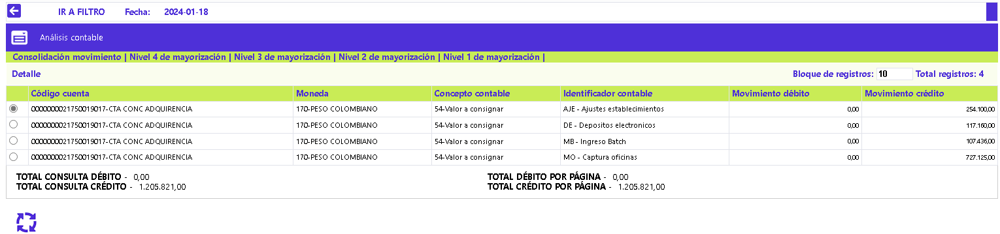

|
Análisis contable |
En este formulario la entidad puede consultar la información contable generada durante el proceso diario y la manera como se hizo la afectación de los diferentes registros. Debe tenerse en cuenta el momento de ejecución del proceso que agrupa el movimiento contable para garantizar que la información consultada en este formulario sea realmente la que corresponda al movimiento procesado.
El formulario contiene cinco hipervínculos que permiten invocar otros formulario que muestran la Consolidación del movimiento, Nivel de mayorización 4, Nivel de mayorización 3, Nivel de mayorización 2 y Nivel de mayorización 1.
El formulario de análisis contable solo contiene la opción Detalle.

Descripción de campos
|
Código cuenta |
En este campo se muestra el código de la cuenta afectada contablemente y a la cual corresponde la información desplegada. |
|
Moneda |
Campo que muestra la moneda en la cual llegó el registro y su asociación a la cuenta contable de acuerdo con los atributos definidos en la parametrización. |
|
Concepto contable |
De acuerdo con el tipo de movimiento, este campo muestra los conceptos con los cuales llegó la información para generar el registro contable a la cuenta |
|
Identificador contable |
Este campo contiene, de acuerdo con el movimiento regitrado, el identificador contable con el que llegó la información para efectuar los respectivos registros contables a la cuenta. |
|
Movimiento débito |
Campo que muestra el valor total de los registros de naturaleza débito aplicados a la cuenta, moneda, concepto contable e identificador durante el día. |
|
Movimiento crédito |
Este campo despliega el valor total de los registros de naturaleza crédito aplicados a la cuenta, moneda, concepto contable e identificador durante el día. |
|
Total consulta débito |
Campo de resumen que muestra el monto total de los movimientos de naturaleza débito registrados durante el día. |
|
Total consulta crédito |
Este campo de resumen contiene el monto total de los movimientos de naturaleza crédito registrados durante el día. |
|
Total débito por página |
Campo que muestra el monto (sumatoria) de los movimientos de naturaleza débito correspondientes a los registros que se encuentran desplegados en la página actual que está consultando el usuario. |
|
Total crédito por página |
Este campo muestra el monto (sumatoria) de los movimientos de naturaleza crédito correspondientes a los registros que se encuentran desplegados en la página actual que está consultando el usuario. |
Si el usuario selecciona un registro e invoca la opción Detalle, se despliega un formulario con la información completa del registro y en el cual ninguno de sus campos es modificable.

Ademàs de algunos de los campos contenidos en el formulario inicial se muestran otros que se explican a continuación:
Descripción de campos
|
Bin |
Campo que muestra el bin con el cual llegó la información procesada y registrada en la cuenta contable |
|
Segmento |
Este campo indica el segmento con el cual llegó la información procesada y registrada en la cuenta contable |
|
Grupo de afinidad |
Campo que contiene el grupo de afinidad con el que llegó la información procesada y registrada en la cuenta contable. |
|
Sucursal |
Este campo indica la sucursal correspondiente a los registros procesados e incluidos en la cuenta contable. |
|
Oficina de radicación |
Campo que contiene la sucursal correspondiente a la oficina de radicación de las tarjetas con que llegó la información procesada y registrada en la cuenta contable. |
|
Origen |
En este campo se muestra el origen por medio del cual llegó la información procesada y registrada en la cuenta contable. |
|
Tipo cartera |
Campo que indica el tipo de cartera asociado a la tarjeta de crèdito con la cual llegó la información procesada y registrada en la cuenta contable. |
|
Transacción interna |
Este campo muestra la transacción interna con la cual llegó el movimiento para ser registrado en la cuenta contable. |
|
Lìnea de crèdito |
Campo que contiene la lìnea de crèdito a la cual pertenece la transacción y con la cual llego la información procesada y registrada en la cuenta contable. |
|
Edad mora |
En este campo se muestra la edad de mora de la tarjeta con la cual llegó la información procesada y registrada en la cuenta contable. |
|
Calificación externa |
Campo que indica la calificación externa de la tarjeta con la cual llegó la información procesada y registrada en la cuenta contable. |
|
Calificación sistema |
En este campo se despliega la calificación del sistema asociada a la tarjeta y con la cual llegó la información procesada y registrada en la cuenta contable. |
|
Calificación provisión |
Campo que contiene la calificación para provisión asociada a la tarjeta y con la cual llegó la información procesada y registrada en la cuenta contable. |
|
Identificación tercero |
En este campo se muestra la indentificación del tercero (para efectos de la interfase contable) con el cual llegó la información procesada y registrada en la cuenta contable. |
|
Marca |
Campo en el que se indica la marca a la que pertenece la tarjeta y con la cual llegó la información procesada y registrada en la cuenta contable. |
|
Tipo de garantìa |
En este campo se despliega el tipo de garantìa con el cual llegó la información procesada y registrada en la cuenta contable. |
|
Tipo cuenta |
Campo que muestra, de acuerdo con la información de los establecimientos, el tipo de cuenta con el cual llegó la información procesada y registrada en la cuenta contable. |
|
Fecha contabilización |
Este campo indica en formato YYYY-MM-DD la fecha en la cual se registró la información contable. |
|
Modalidad de crèdito |
Muestra de acuerdo con la información procesada y registrada en la cuenta contable, la modalidad de crèdito con la cual llegó la información. |
Nivel de
consolidación: Si el usuario invoca el hipervìnculo
Nivel de consolidación se despliega un nuevo formulario que muestra un resumen general,
acerca de las cuentas afectadas en el proceso diario; para facilitar la labor de consulta, esta
función mostrará dicha información en orden ascendente de acuerdo con el
código de cuenta contable a nivel de las cuentas auxiliares (todas las posiciones de la cuenta). >
 Descripción de campos Código
cuenta
En
este campo se muestra el código de la cuenta afectada contablemente
y a la cual corresponde la información desplegada. Moneda
Campo
que muestra la moneda en la cual llegó el registro y
su asociación a la cuenta
contable de acuerdo con los atributos definidos en la parametrización.
Movimiento
débito
Campo
que muestra el valor total de los registros de naturaleza débito
aplicados a la cuenta durante
el día.
Movimiento
crédito
Este
campo despliega el valor total de los registros de naturaleza crédito
aplicados a la cuenta durante
el día. Total
consulta débito
Campo
de resumen que muestra el monto total de los movimientos de naturaleza
débito registrados durante el día.
Total
consulta crédito
Este
campo de resumen contiene el monto total de los movimientos de naturaleza
crédito registrados durante el día. Total
débito por página
Campo
que muestra el monto (sumatoria) de los movimientos de naturaleza débito
correspondientes a los registros que se encuentran desplegados en la
página actual que está consultando el usuario.
Total
crédito por página
Este
campo muestra el monto (sumatoria) de los movimientos de naturaleza
crédito correspondientes a los registros que se encuentran desplegados
en la página actual que está consultando el usuario. Nivel '1,2,3,4' de
mayorización: Si el usuario invoca cualquiera de los
hipervìnculos Nivel 1,2,3 o 4 de mayorización se despliega un nuevo
formulario que muestra de acuerdo con lo definido por la entidad en Paràmetros contables, >las cuentas contables mayores en sus
diferentes niveles. > Los campos desplegados en cualquiera de estos formularios son los mismos y lo
ùnico que cambia es el la cantidad de dìgitos de la cuenta mayor que se muestran al
usuario, dato que se muestra en el mismo formulario. El formulario contiene un filtro que le permite al usuario consultar dentro de cada nivel de
mayorización la información correspondiente a una cuenta determinada. Descripción de campos Código
cuenta
En
este campo se muestra el código de la cuenta afectada contablemente
y a la cual corresponde la información desplegada, de acuerdo con la cantidad de
dìgitos señalada para el nivel de mayorización en los Paràmetros contables. Moneda
Campo
que muestra la moneda en la cual llegó el registro
y su asociación a la cuenta
contable de acuerdo con los atributos definidos en la parametrización.
Saldo anterior
Este campo contiene el saldo con el cual terminó la cuenta despuès
de la ùltima afectación contable efectuada sobre la misma. Movimiento dèbito
Campo
que muestra la sumatoria de todos los registros tipo dèbito que tuvo la cuenta durante el
dìa.
Movimiento crèdito
Este campo indica la sumatoria de todos los registros tipo crèdito que
tuvo la cuenta durante el dìa.
Saldo nuevo
Campo
que muestra a partir del saldo anterior y las afectaciones de los movimientos dèbito y
crèdito que se le aplicaron, el saldo final con el cual cierra la cuenta.
Total
consulta débito
Campo
de resumen que muestra el monto total de los movimientos de naturaleza
débito registrados durante el día.
Total
consulta crédito
Este
campo de resumen contiene el monto total de los movimientos de naturaleza
crédito registrados durante el día. Total
débito por página
Campo
que muestra el monto (sumatoria) de los movimientos de naturaleza débito
correspondientes a los registros que se encuentran desplegados en la
página actual que está consultando el usuario.
Total
crédito por página
Este
campo muestra el monto (sumatoria) de los movimientos de naturaleza
crédito correspondientes a los registros que se encuentran desplegados
en la página actual que está consultando el usuario.